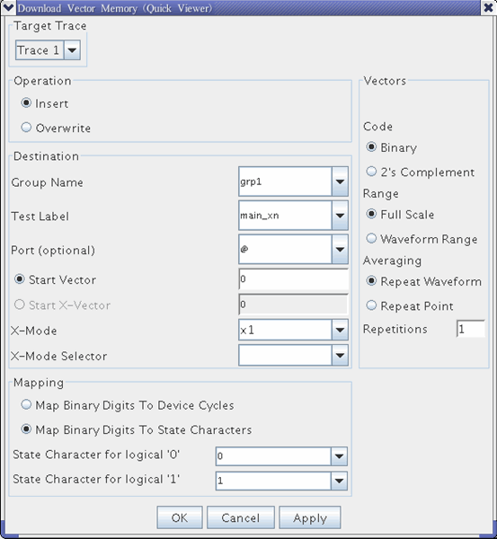
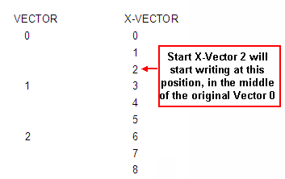
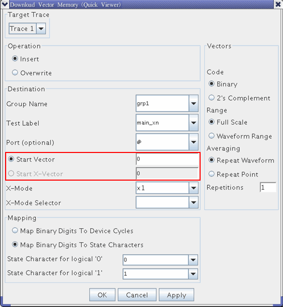
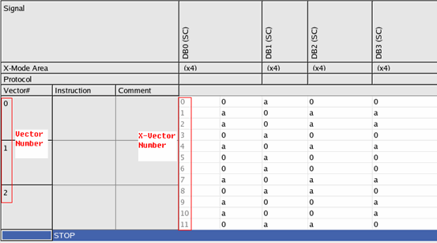

Download Vector...
This menu item accesses the Download Vector Memory window (see the figure below). This window enables you to download the generated waveform to the vector memory. The vector memory stores the digital data required for DAC tests. A typical application of this function is to convert a sine wave created by the Generate function to digital code, and use this as the input for a DAC during a distortion test. You must specify a target trace ID.

Parameters of the Download Vector Memory window are:
- Code: Format of the data to be downloaded. Choices are:
- Binary: Unsigned numbers. An eight-bit size, for example, corresponds to 0 ... 255.
- 2's Complement: Signed numbers. An eight-bit size, for example, corresponds to -128 ... +127.
- Range: Data amplitude adjustment. Choices are:
- Full Scale: The amplitude is adjusted to the size of the pin group. Binary code would yield 0 ... FS (full scale), 2's complement would yield -FS/2 ... +FS/2 - 1.
- Waveform Range: The amplitude is not adjusted.Note If you choose Waveform Range, you must pay attention to the waveform amplitude and the size of the pin group. Values of the generated waveform that exceed the width of the pin group are cut off.
Example: If you have a 4-bit DAC and download binary code, all values below zero will be transmitted as 0000 and all values above 15 as 1111. If you download 2's complement code to the same DAC, all values below -8 will be transmitted as 1000 (-8) and all values above 7 as 0111 (+7).
- Averaging: You can repeat the entire waveform or its data points:
- Repeat Waveform: The generated waveform will be repeated according to the entered number of repetitions.
- Repeat Point: Each point of the generated waveform will be repeated according to the
entered number of repetitions.
Example: If you have a 3-bit DAC and download a full scale ramp waveform (8 data points from 0 to 7), a point repetition of three would download the sequence 0, 0, 0, 1, 1, 1, 2, 2, 2, 3, 3, 3, 4, 4, 4, 5, 5, 5, 6, 6, 6, 7, 7, 7.
- Operation: The storage of the downloaded data. Choices are:
- Insert: Inserts the data into the vector memory starting at the address location specified in the Starting Vector field. The generated vector is inserted to the pin group specified in the Group Name field, and the address of the pins that belong to the specified port and do not belong to the specified pin group is filled with 0 (for input pin) or X (for output pin).
- Overwrite: Overwrites the current contents of the vector memory starting at the Start Vector address or Start X-Vector. "Start X-Vector" enables the selection of arbitrary x-vectors as start point in case of x-modes other than x1. (Refer to Definitions: vector, pattern, burst, ... for the detail information of X-Vector.)
- Destination: Parameters in this area specifies where to download the generated vector:
- Group Name: Target digital pin group name to which the generated vector is downloaded.
- Test Label: Vector label name to which the generated vector is downloaded.
- Port: Target port name to which the generated vector is downloaded. All the member pins of
the port must include the member of the pin group specified in the Group Name field.
If a label for a single port (non-multi-port) is specified in the Test Label field, enter "@" or set this field blank.
- Starting Vector: Vector number at which data downloading begins.
- Start Vector: Vector number at which data downloading begins.
- Start X-Vector: X-Vectors at which data downloading begins. (Refer to Definitions: vector, pattern, burst, ... for the detail information of X-Vector.)

- (only available for Insert operation) X-Mode: select the x-mode to use
- X-Mode Selector: selects the x-mode selector to use. (Refer to Representing a pattern in device orientation for the detail information of X-Mode selector)
- Mapping:
- (only for X1 mode) Map binary digits to Device Cycles: Map the binary digits in the vector
to device cycles
Device Cycle for logical '0': select the device cycle for logic 0
Device Cycle for logical '1': select the device cycle for logic 1
- Map binary digits to State Characters: Map the binary digits in the vectors to state
characters. This is only available when the state characters are defined.
State Character for logical '0': select the state character for logic 0
State Character for logical '1': select the state character for logic 1
- (only for X1 mode) Map binary digits to Device Cycles: Map the binary digits in the vector
to device cycles
For operation Insert,
- only Start Vector can be used

you can select the x-mode in the combo box. If x-mode selectors are defined for the selected x-mode, you can select the x-mode selector in the combo-box. The X-mode and X-mode selector of the specified vectors are used as the default values of X-Mode and X-Mode Selector.
For Operation Overwrite,
- both Start Vector and Start X-Vector can be used.
- you cannot select the X-Mode and X-Mode selector. The x-mode and x-mode selector of the
specified vectors/x-vectors are filled automatically.Note If the STATEMAP is not defined in WAVETBL and the X-Mode Area is not inserted in the pattern editor, Start X-Vector, X-Mode, X-Mode Selector and Map Binary Digits To State Characters are disabled.
When you click OK, the waveform data is not only downloaded to vector memory, but also logged in three dedicated files.
The downloaded vectors is shown in the pattern editor as below:

Error case handling
- If the pins in the specified pin group have different x-mode settings, the downloading will be terminated and an error message will be reported in system console.
- If the number of waveform data is not a multiple of the x-mode number, the data will be extended with the values of the last row to form a smallest multiple of the x-mode number. An warning message will be reported in system console.
- If any of the state characters is not defined in the wavetable, the downloading process will be terminated and an error message will be reported in system console.
In overwrite mode:
- If the target vectors are in different x-mode area, the downloading will be terminated and an error message will be reported.
- If the mapped index exceeds the whole existing vector memory, the downloading will be terminated and an error message will be reported.
Functional changes
- Introduced before SmarTest 6.3.2
- SmarTest 6.3.3: Both physical device cycle and logical device cycle are supported in the Download Vector Memory window.
- SmarTest 6.5.2: The logical waveform is not supported.
- SmarTest 7.0.3: Support downloading waveform in x-mode